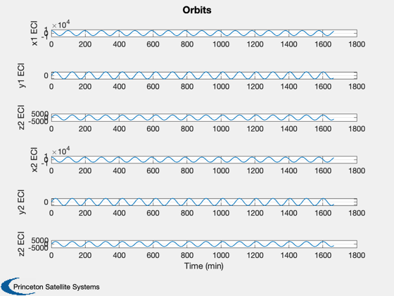
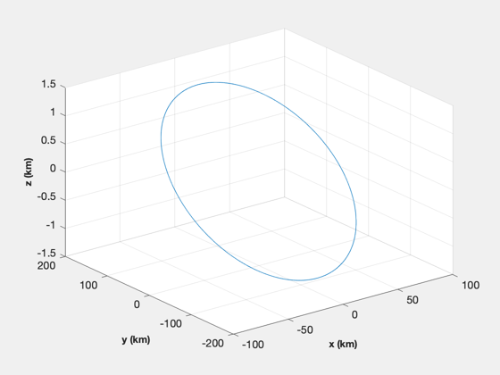

Generates two orbits and plots their relative positions
------------------------------------------------------------------------
See also RVOrbGen, RelativeCoord, Constant, NewFig, Plot2D, XLabelS,
YLabelS, ZLabelS, TOrbit
------------------------------------------------------------------------
Contents
Constants
degToRad = Constant('deg to rad');
Generate the time vector
nSim = 1000;
dTSim = 100;
tOrbit = (0:(nSim-1))*dTSim;
if we want to simulate control
[r1, v1] = RVOrbGen( [6718+352 28.45*degToRad 0 0 0 0], tOrbit );
[r2, v2] = RVOrbGen( [6718+352 28.46*degToRad 0 0 0.01 0], tOrbit );
d = RelativeCoord( r1, v1, r2 );
Plotting
xLbl = 'Time (min)';
yLbl = ['x1 ECI';'y1 ECI';'z2 ECI';...
'x2 ECI';'y2 ECI';'z2 ECI'];
Plot2D( tOrbit/60, [r1; r2], xLbl, yLbl,'Orbits')
NewFig('Relative Orbit')
plot3( d(1,:), d(2,:) ,d(3,:) )
grid
XLabelS('x (km)')
YLabelS('y (km)')
ZLabelS('z (km)')
 